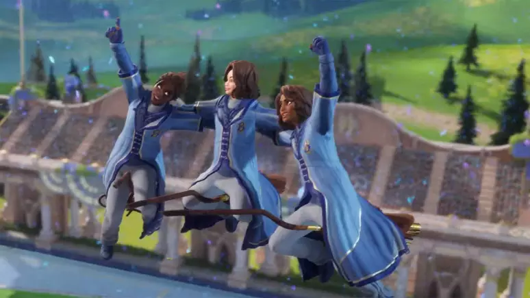

Jogando nas posições clássicas de Batedor, Artilheiro, Goleiro ou Apanhador, eles criarão seu próprio campeão personalizado ou jogar como ou contra personagens icônicos da saga, como Harry Potter, Ron Weasley, Ginny Weasley, Draco Malfoy e Cho Chang.

A Warner Bros. Games acaba de revelar que Harry Potter: Campeões do Quadribol, um jogo baseado no mundo mágico de Harry Potter, mas com foco no famoso esporte de bruxos, chega no dia 3 de setembro para PC e consoles PlayStation, Switch e Xbox.